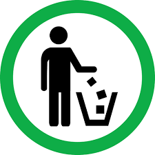

EJERCICIOS DEL WEB SITE POLICAR S.A.
Nos encargamos de hacer el mejor plastico desde 1969.
listas
EL Dinosario tRex
Lista de Utiles Ordenada
- Matematica - Cuaderno de Cuadricula
- Idioma - Cuaderno de Lineas
- Programacion III Cuaderno de hojas en blanco
EL Dinosario tRex
Lista de Utiles DesOrdenada
- FC. Barcelona
- Real Madrid
- Real Betis
- Atlético de Madrid
Lista de Definiciones
- Pizpireta
- Dicho de una mujer: Viva, pronta y aguda.
- Pulular
- Dicho de las personas, animales o cosas: Abundar y bullir en un lugar.
- Concupiscencia
- En la moral católica, deseo de bienes terrenos y, en especial, apetito desordenado de placeres deshonestos.